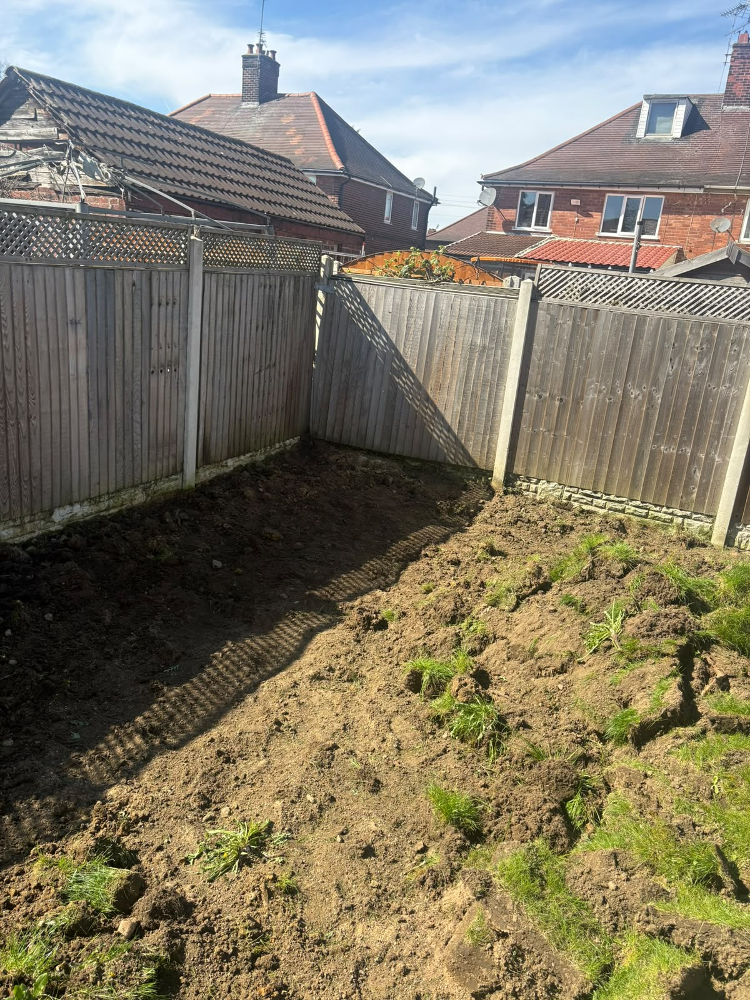
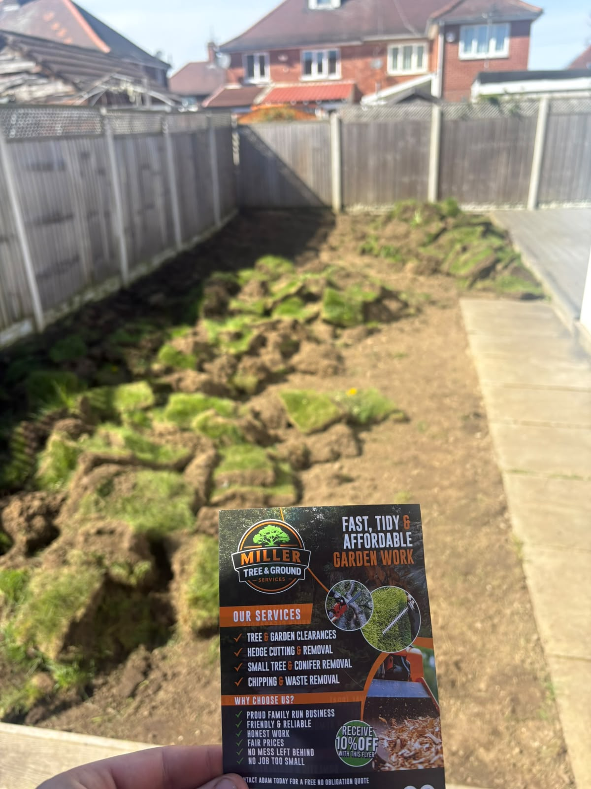
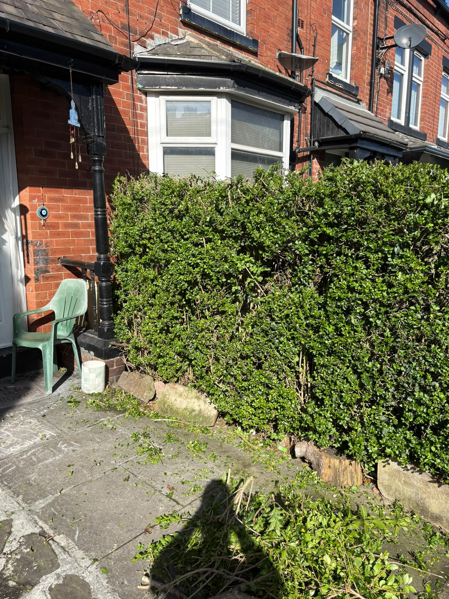
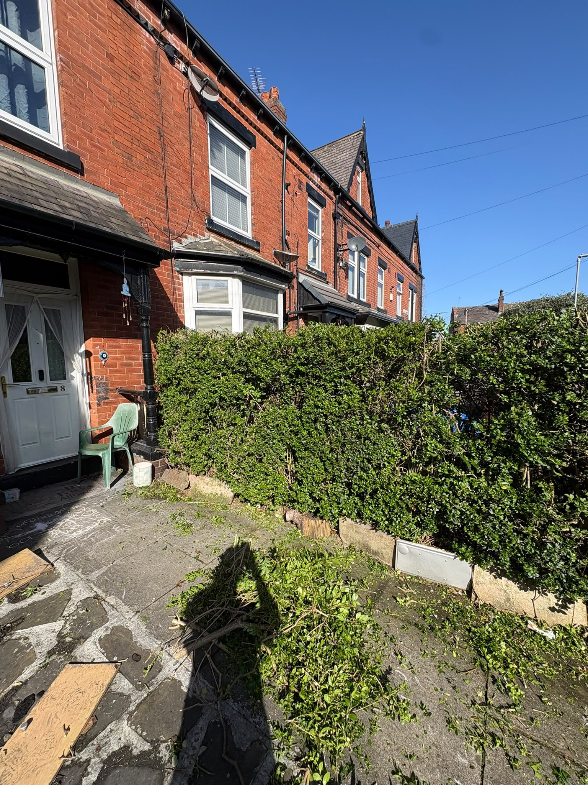
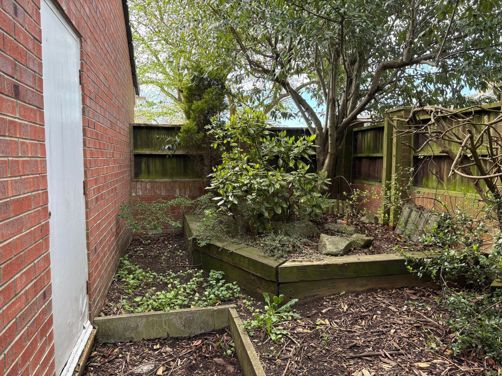
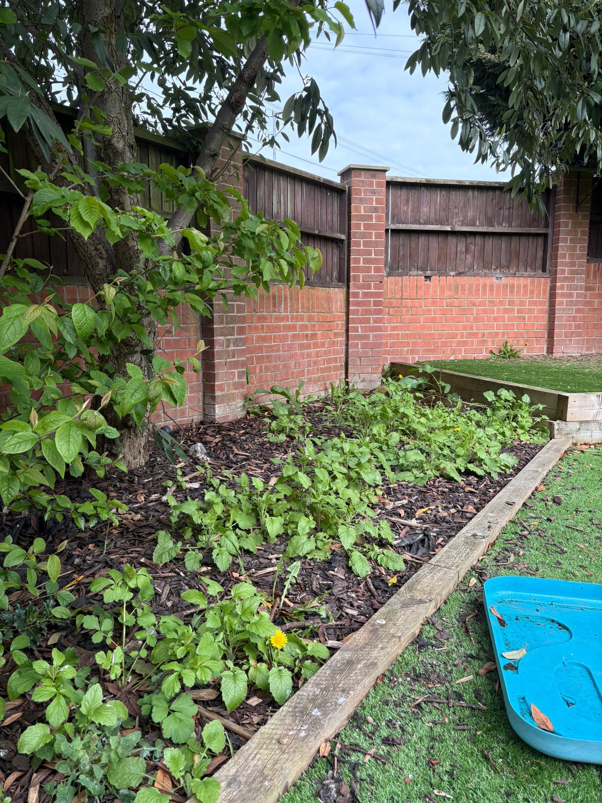
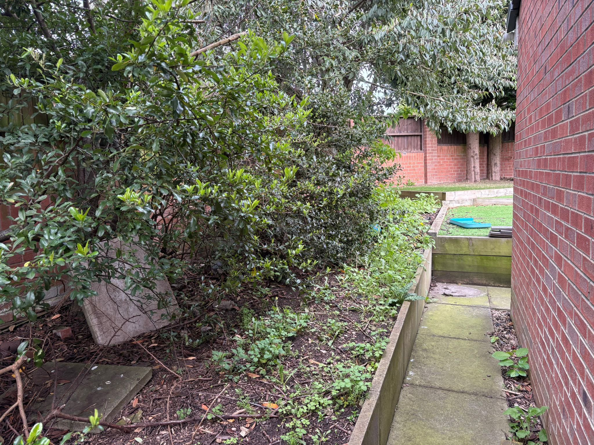
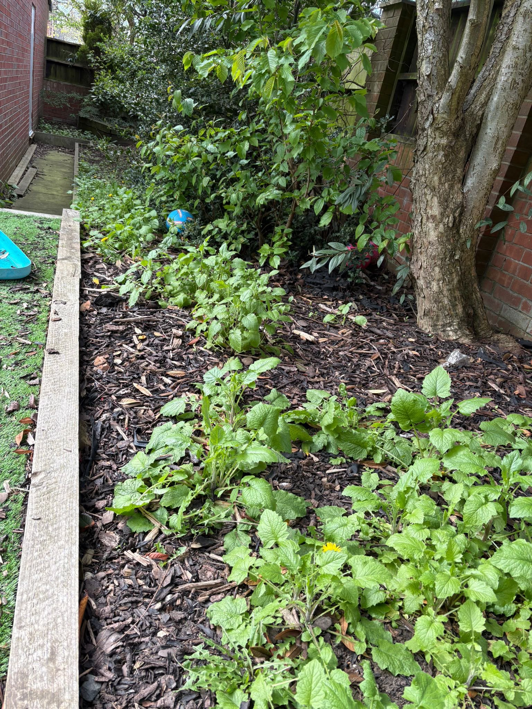
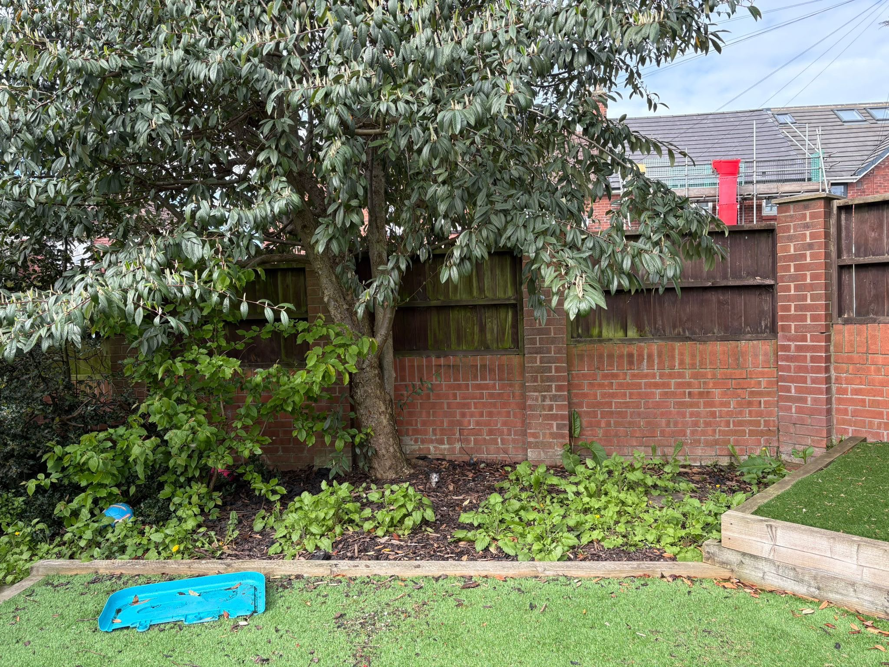

Tree Services
Pruning, crown reductions, shaping, dismantling and removal. We focus on controlled work and a tidy finish.
Ask about this service →Tree, hedge, garden and ground services for homes, landlords, businesses and other outdoor spaces.
Pruning, crown reductions, shaping, dismantling and removal. We focus on controlled work and a tidy finish.
Ask about this service →Regular trims, major reductions and removal for hedges that have outgrown their space or need bringing back into shape.
Ask about this service →Clearances, grass cutting, general tidy-ups and ongoing maintenance to keep outdoor areas usable and presentable.
Ask about this service →Stump removal and grinding, green waste removal and larger ground clearances where more involved work is needed.
Ask about this service →











 Scan to quoteUse your phone camera
Scan to quoteUse your phone camera